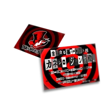

Que hacemos
Hartados de los engaños, la hipocresía y la corrupción que los rodea, los ladrones fantasma se dedican a "robar" Los corazones corruptos de los adultos "malvados" con el fin de reformarlos y transformarlos. Los Ladrones Fantasma se dan cuenta de que la sociedad obliga a las personas a usar máscaras para proteger sus vulnerabilidades internas y, literalmente, arrancándose la máscara protectora para desatar a sus Personas y confrontar a su ser interior, los héroes despiertan su poder interior y lo usan para ayudar a los necesitados.
